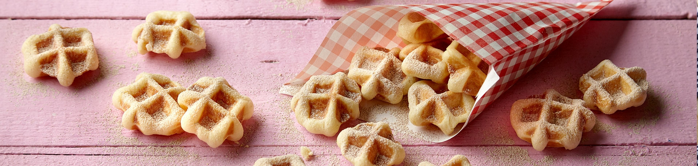

Mini-Waffeln To Go

Zutaten:
- 60 g Butter
- 1 EL Milch
- 1 TL Zucker
- 10 g frische Hefe
- 1 Stück Ei
- 180 g Mehl
- 1 TL Öl
- 15 g Puderzucker
- 1 Prise Zimt
Ran an den Herd!
- Butter schmelzen, Milch und Zucker dazugeben. Hefe zerbröseln und in der Milch-Masse auflösen. Ei und Mehl unterrühren und den Teig ca. 1 Stunde gehen lassen.
- Teig in 40 Portionen teilen und zu kleinen Kugeln formen. Belgisches Waffeleisen vorheizen und mit Öl einpinseln. Jeweils acht Kugeln mit genügend Abstand in das Waffeleisen legen und ca. 3 Minuten backen. Anschließend auf einem Kuchenrost auskühlen lassen.
- Puderzucker und Zimt vermischen und die Waffeln damit bestäuben.